Upon joining Ford in 2021, my first task was to redesign the existing PACE application for automobile engineers at Ford which was initially built by programmers without any design thinking involved. My responsibility was to improve the application's readability, navigability, and accessibility by considering the constraints of Qlikview.
'Performance Analytics for Connected Engineering' is an analytics app that monitors the performance across the Ford connected vehicle ecosystem. It reports connectivity issues when a command is requested by the customer from the mobile app to the vehicle. To proceed further, I had to understand the goals and challenges of the project and put pen to paper.
Challenges and Goals
- Finding the most vital usability problems and fixing them
- QlikView (an analytics tool) dev constraints
- Implementing the Ford Design System to the existing dashboard
- Measure outcome
Research
To understand the behavioral patterns and identify the pain points of the users, I conducted a 10-question survey with 51 participant users.
One surprising takeaway was their response to 'How far back do you review data?' Almost 97% of the users were only interested in viewing the data within the recent 6 months. The application was earlier storing the past 4 years of data which was in turn affecting the speed and performance of the dashboard.
In addition to this, the participants were asked to list out the areas of improvement. Below are the 4 most common points mentioned by the participants.
- Visual noise, crowded data, no consistency, difficult to find information
- Technical terms were difficult to understand for business stakeholders. Engineers were familiar with these terms.
- It's challenging to find hidden filters
- The charts take forever to load, too slow when the filters are selected
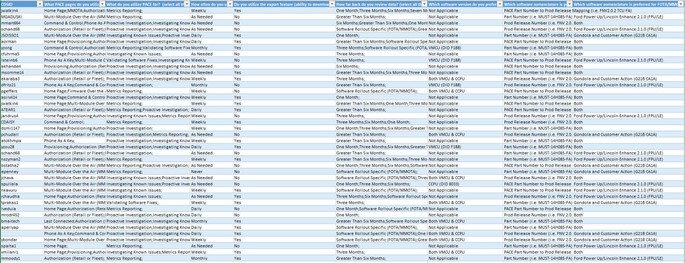
User Personas
After research and testing, I compiled all data into a user persona to give any potential stakeholders or coworkers a simple picture of what typical users look like.
The vital takeaways are that there are two types of users — field workers (engineers, quality control), and decision-makers (business managers and product managers). Each has its respective responsibilities and pain points.
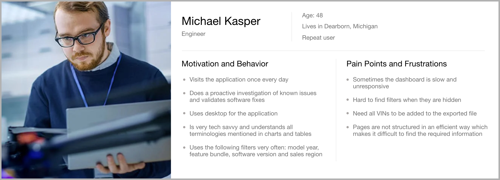
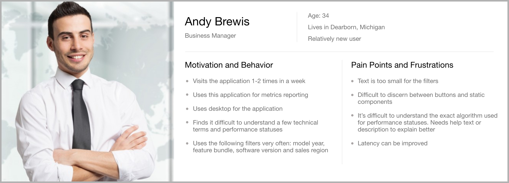
Identifying Pain Points
Problem 1: Inconsistent UI
The elements on the dashboard pages are not uniform. Components such as links, buttons, icons, headers, and theme colors are inconsistently used across the application. Titles and body copy have inconsistent font styles and sizes which stops users from establishing a pattern in their minds and completing tasks efficiently.
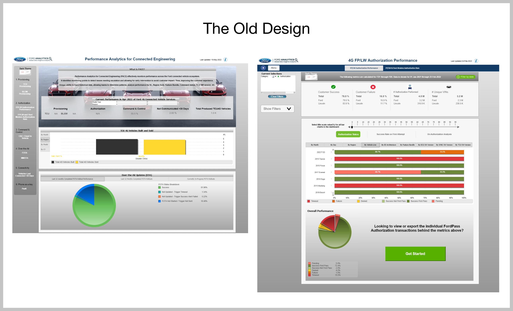
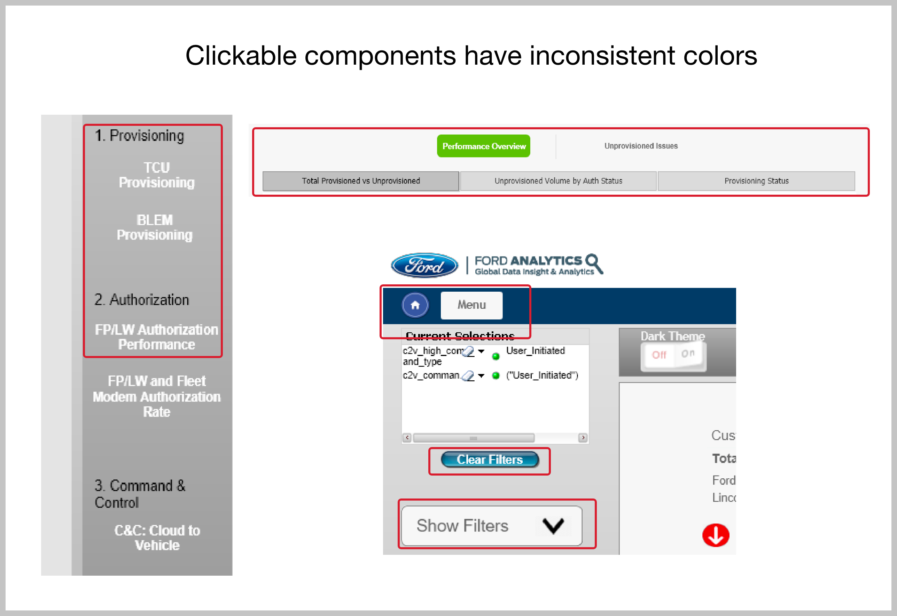
Problem 2: Charts and technical terms have no help text to provide context
Some users found it difficult to understand the technical terms used in the dashboards. Knowledge base searchability is a massive hurdle, and users would rather file a support ticket than search for the information they need.
Problem 3: Hidden filters
A lot of engineers and product owners complained about filters not being obvious to find due to the expand-collapse component. Even if users found the filters, it was always an additional step to expand them before selecting the required option.
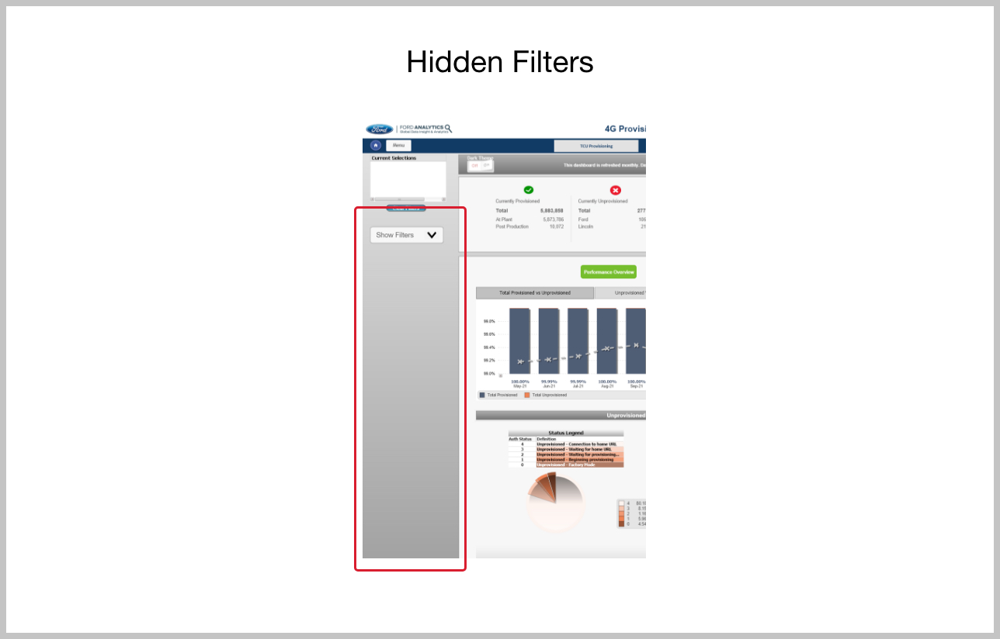
Problem 4: App speed and performance
User research revealed that loading charts and filters was taking more time than expected due to data overload in QlikView, affecting the speed and performance of the app.
Designing Solutions
I started my design process with low-fidelity wireframes — beginning in isolation to gather my thoughts, then holding several working sessions with the team (product owner, data scientists, UX writer, and developers). Once aligned on the proposed solutions, we tested them with customers and received a positive response to move forward with prototyping.
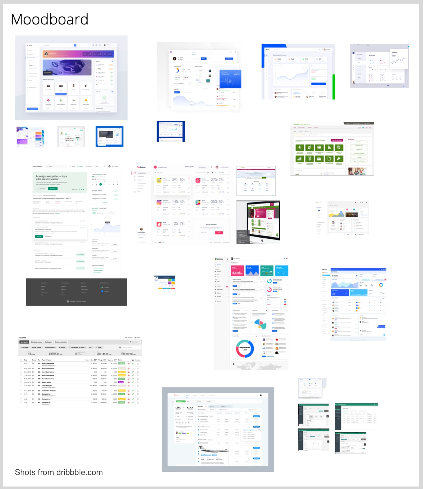

Solution 1: Intuitive and consistent UI design language
The inconsistent UI was one of the biggest problems for users. Data wasn't displayed in a hierarchical manner, resulting in visual noise and crowded data making it difficult to comprehend and analyze results.
As a solution, I implemented components from the Global Ford Design System, which helped achieve pattern and consistency in the interface. This lets users reduce learning time since they get familiar with the experience and can focus on executing tasks rather than relearning the UI every time they switch context.
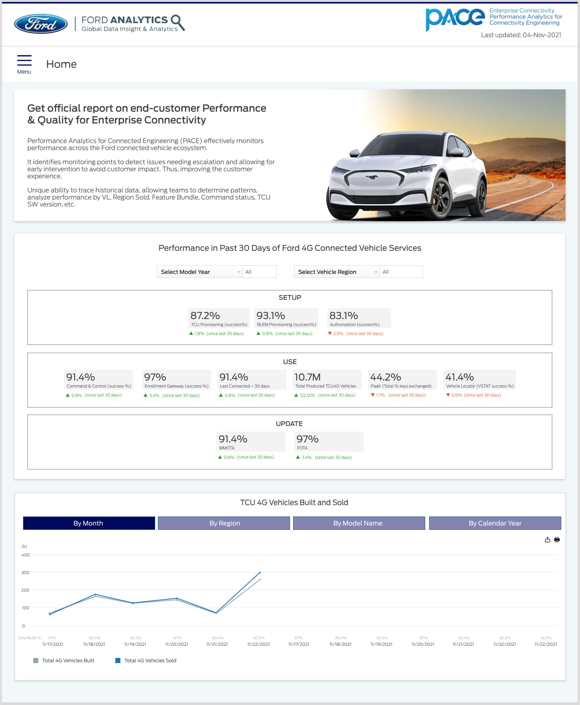
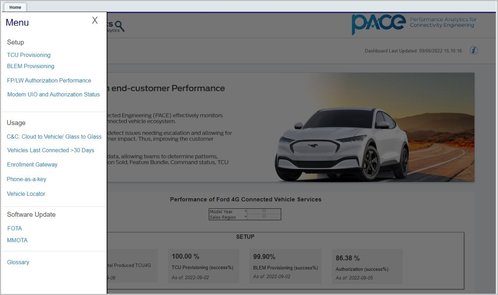
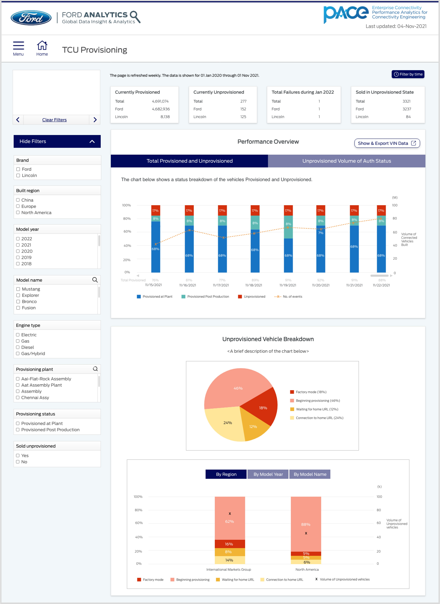
Solution 2: Adding help text and glossary page for technical terms
Understanding technical terms in the connected vehicle ecosystem was a challenge, especially for business owners and management. As a solution, I added help text on hover for all performance statuses, providing context that the terms themselves may not convey.
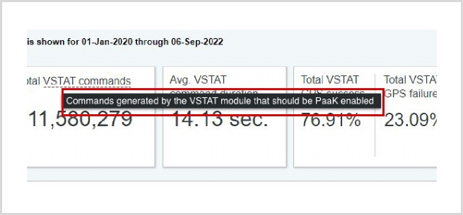
In addition, I added a Glossary page that filters terms according to the active feature page. Styling the Glossary table in QlikView was challenging, but we kept it because it directly solves the user problem.
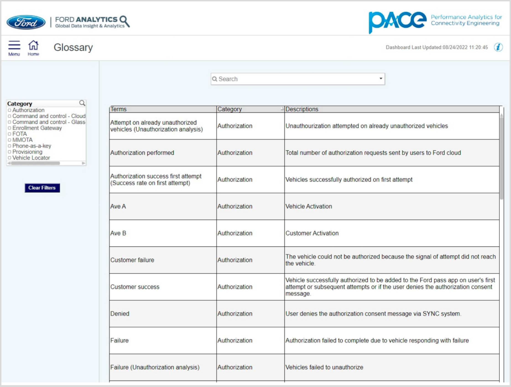
Solution 3: Show all filters by default
One way to reduce time and effort for users was to show all filters by default instead of collapsing them within an accordion. I kept filters in their existing position because familiar patterns from sites like Amazon, Kayak, and Google — all using left-side filters — shape what users expect. Most people read left to right, so the left side of the screen gets the most attention.
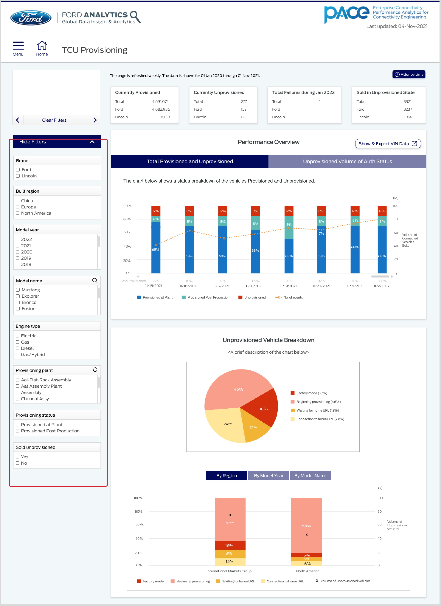
Solution 4: App speed and performance
Since users didn't care about data older than 1 year, I removed that data from the backend, resulting in faster load speed and improved performance across the application.
Summary
Through research and testing, I found that PACE's four biggest problems were poor UI, data load speed, technical jargon, and hidden filters. I minimized these through continuous testing and design iterations, leading to the following outcomes:
1. Reduced the load time of all data visualizations by 3 seconds
2. Increased the number of internal engineering and management users from 257 to ~1500 within 4 months of product release
3. Reduced the user time for completion of major tasks in the app by an average of 12 seconds (32%)